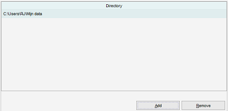
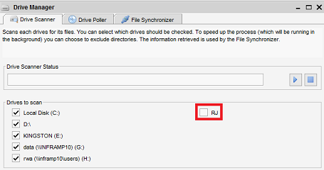

Directories as Drives
Menu path: Settings > Settings > Directories as Drives
Not all platforms have or know the concept of a drive. To make your life easier within Data Crow (especially when working with the Drive Manager)
you can define which directories should be considered as drives. It essentially creates a shortcut to the directory.
Without this the Drive Manager functionality will not work on most non Windows platforms.

With the settings as displayed above the following drive will appear in the Drive Manager:

Add new Drive
Press the "Add" button. This will open the file browser. Navigate to the directory
and select "Open".
Removing a Drive
Select the Drive in the table and press "Remove".
Note: Data Crow needs to be restarted for the changes to become apparent.